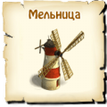

Получено: файл; исходный URL. Исходный файл без перекодирования; авторство не установлено. Страница: источник.
Мельница
браузерная версия; платформа и дата редакции не установлены- Тип
- Постройка
- Версия и дата
- браузерная версия; платформа и дата редакции не установлены
Данные по источнику · браузерная версия; платформа не определена · дата редакции не установлена
Предварительно: Автоматическое чтение цифровых пиктограмм и их подписей; знак ? означает нераспознанное количество, подписи могут содержать ошибки источника. Требуется ручная сверка каждой стадии.. Требуется сверка.
- Исходные подписи и цифры в первой колонке
- [Мельница] | [Доступен на 9-м уровне] | или открыть | за | 9 | [Зомбаксы] | [Стоимость постройки] | 20000 | [Опыт за каждый этап строительства] | 200 | 50 | 150 | 500 | [Суммарный опыт] | 900
- Стадии по пиктограммам
- Стадия 1: 30 × Бревна + 20 × Камни + 10 × Доска Стадия 2: 20 × Цемент + 10 × Проволока + 10 × Труба Стадия 3: 20 × Красная краска + 10 × Желтая краска + 10 × Пружина
Данные по источнику · Мой Мир (Mail.ru), историческая таблица · дата редакции таблицы не установлена
Предварительно: Текст таблицы Мой Мир. Некоторые обозначения валют и уровней на странице являются изображениями и могут быть потеряны при извлечении. Источники не обязательно независимы.. Требуется сверка.
- Название и данные первой колонки
- Мельница 20000 9 ур. или 9
- Опыт, стадии, производство и модернизация
- Опыт: 1900 = 200+50+150+500+1000(Модернизация) Стадии строительства: 30 Брёвна + 20 Камни + 10 Доска 20 Цемент + 10 Проволока + 10 Труба 20 Красная краска + 10 Жёлтая краска + 10 Пружина Создает: 1 Доска = 5 Брёвна + 5000 Монеты 1 Цемент = 5 Камни + 5000 Монеты Модернизация: 10 Канаты + 20 Кварц + 100 Проволока Создает: Бонус-бандит. Три раза в день нажми Старт, чтобы испытать удачу. Призы: 5000 Монет, 1000 Опыт, 3 Зомбакса


Данные по источнику · браузерная версия; платформа не установлена · дата редакции списка не установлена
Предварительно: Прочитан список. Имена файлов пиктограмм приводятся как есть: они не гарантируют идентификацию материала. Alt-атрибуты источника содержат ошибки. Отдельная статья и дата не проверены.. Требуется сверка.
- Сведения из списка, включая имена файлов пиктограмм
- [рисунок: Melnica.png] Мельница Доступна на: 9 уровне Стоимость: 20 000 монет Даёт опыта: 900 (200+50+150+500) Стадии строительства: 1. 30 брёвен + 20 камней + 10 досок 2. 20 цемента + 10 проволок + 10 труб 3. 20 красной краски + 10 жёлтой краски + 10 пружин Производит: 1. 5 брёвен + 5 000 монет = 1 доска 2. 5 камней + 5 000 монет = 1 цемент Модернизация: 10 канатов + 20 кварца + 100 проволоки После модернизации начинает работать бонус-рулетка, в которой можно выиграть монеты, опыт, зомбаксы.
Данные по источнику · браузерная игра; платформа страницы не уточнена · 11.01.2014 — публикация; редакция неизвестна
Предварительно: Прочитана конкретная строка; старые сведения, у источника встречаются опечатки. Возможны заимствования, независимость от других сайтов не доказана.. Требуется сверка.
Данные по источнику · браузерная игра, платформа не уточнена · 07.04.2015
Предварительно: Прочитана отдельная историческая статья; условия могут зависеть от версии. Независимость от других сайтов не установлена.. Требуется сверка.
- Стадии
- 1: 30 брёвен + 20 камней + 10 досок; 2: 20 цемента + 10 проволок + 10 труб; 3: 20 красной краски + 10 жёлтой краски + 10 пружин.
Данные по источнику · браузерная версия Мой Мир, сообщения участников форума · 03–15.07.2011
Предварительно: Фанатский источник; возможное копирование и изменения после публикации не исключены. Неподписанные иконки определены предварительно по именам файлов.. Требуется сверка.
- Наблюдения игроков
- 3 июля: 5000 монет; другое вращение — ничего. 4 и 5 июля: по 5000 монет; 7 июля: ничего. Другой игрок также сообщил отсутствие выигрыша после модернизации.
- Ограничение
- Это отдельные сообщения участников форума, не полный состав рулетки и не вероятности. Ветка посвящена улучшенным постройкам и флагам; модернизация не может быть автоматически подтверждена для каждого сообщения.
Данные по источнику · историческая браузерная игра, площадка не указана · 05.05.2012 — дата публикации; дата редакции неизвестна
Предварительно: Сопоставлено по единственному точному названию; различные версии или одноимённые объекты могут различаться. Названия файлов и alt пиктограмм сохранены как подписи, не заменяют проверенную расшифровку; изображения и цены требуют ручной сверки. Независимость от zombi-ferma.ru и других сайтов не установлена.. Требуется сверка.
- Текст и пиктограммы источника
- [изображение: m_mill.png] Мельница Доступна на: 9 уровне Стоимость: 20 000 монет Даёт опыта: 900 (200+50+150+500) Стадии строительства: 1. 30 брёвен + 20 камней + 10 досок 2. 20 цемента + 10 проволок + 10 труб 3. 20 красной краски + 10 жёлтой краски + 10 пружин Производит: 1. 5 брёвен + 5 000 монет = 1 доска 2. 5 камней + 5 000 монет = 1 цемент Модернизация: 10 канатов + 20 кварца + 100 проволоки После модернизации начинает работать бонус-рулетка, в которой можно выиграть монеты, опыт, зомбаксы.
Связанные сущности
нет проверенных связей — требуется сверка.
Источники
- Каталог построек: строка и пиктограммы; дата неизвестна
- Zombiemail: строка таблицы построек, часть 1, версия Мой Мир
- ZOMBIA: прочитана карточка в каталоге
- Адрес отдельной карточки, отдельный доступ не проверен
- Zommbie.at.ua: раздел 38 построек, запись 2014 года
- Прочитанная отдельная статья
- Прочитанная отдельная страница
- ZF.3dn: историческая карточка постройки